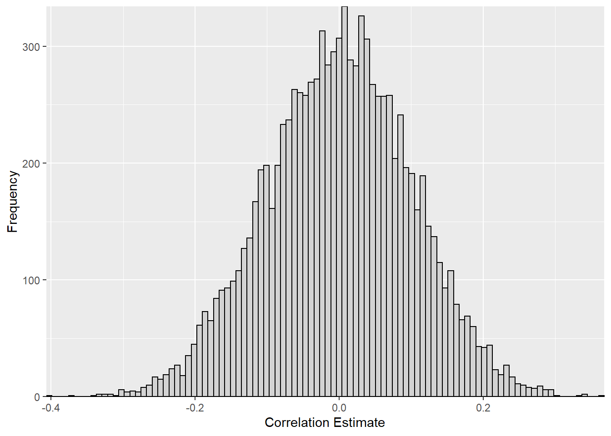
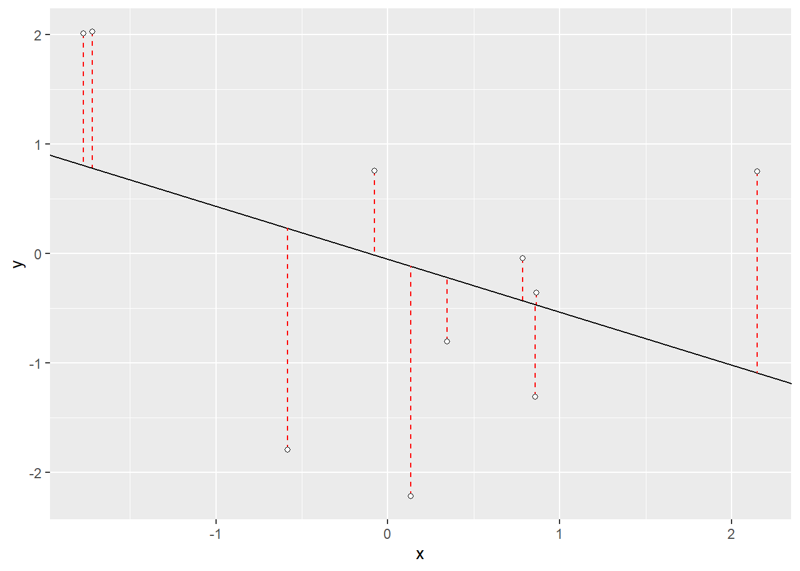

The variance sum law states that the expectation value of the sum of two independently random variables (\(x\) and \(y\)) equal the sum of the expectation values of the two variables:
\[\begin{align} var(x+y) = var(x)+var(y) \end{align}\]To try and code this in R you might start using the stats::rnorm() function like so:
What is going on here? It does not look as though the variance sum law works in the case shown above. Is it possible that these two variables are not completely independent from one another?
Let’s take a look:
They are correlated! Because we did not ensure that the two variables are completely random with respect to one another, they are slightly correlated with each other.
Lets play around with this a little. How much correlation we would expect between two random variables? Why don’t we simulate a distribution of random variables and see how correlated these to random variables are:
set.seed(123)
vector_list <- 1:10000
corr_data <- data.frame()
for (variable in vector_list) {
x <- stats::rnorm(100)
y <- stats::rnorm(100)
cor_est <- cor.test(x,y)[4]
corr_data <- rbind(corr_data,cor_est)
}
ggplot(corr_data, aes(x = estimate)) +
geom_histogram(bins = 100, color = "black", fill = "lightgrey") +
scale_x_continuous("Correlation Estimate", expand = c(0,0)) +
scale_y_continuous("Frequency", expand = c(0,0))
While the 10,000 simulated values appear to be centered around zero, there is quite a large spread in the results with correlation coefficient as low as -0.41 and as high as 0.36!
Now that we know the reason the variance sum law doesn’t seem to work in this case, how can we generate two random variables two with correlation between them?
We can start by taking a look at the differences in the correlation of these values using a least squares regression model and exploring the residuals.
set.seed(666) #set seed rock on \m/
y <- rnorm(10)
x <- rnorm(10)
lm <- lm(y ~ x)
#show lm coefficients
lm$coefficients
## (Intercept) x
## -0.04818839 -0.48394162
# pull out the slope of the regression model
slope <- lm$coefficients[2]
# pull out the y-intercept of the regression model
intercept <- lm$coefficients[1]
#get the predicted valus from the regression model
yhat <- lm$fitted.values
# difference between predicted values and actual (residuals)
diff_yx <- y-yhat
# plot data - qplot allows the use of vectors over data frames
qplot(x=x, y=y)+
# plot regression slope
geom_abline(slope = slope, intercept = intercept) +
# add the residuals
geom_segment(aes(x=x, xend=x, y=y, yend=yhat), color = "red", linetype = "dashed") +
# plot points "pch" just allows me to fill in the points
geom_point(fill="white",colour="black",pch=21)
# plot table of data points, predicted values (yhat) and residuals (diff_yx)
knitr::kable(data.frame(x,y,yhat,diff_yx))| x | y | yhat | diff_yx |
|---|---|---|---|
| 2.1500426 | 0.7533110 | -1.0886835 | 1.8419945 |
| -1.7702308 | 2.0143547 | 0.8085000 | 1.2058547 |
| 0.8646536 | -0.3551345 | -0.4666303 | 0.1114958 |
| -1.7201559 | 2.0281678 | 0.7842666 | 1.2439012 |
| 0.1341257 | -2.2168745 | -0.1130974 | -2.1037771 |
| -0.0758266 | 0.7583962 | -0.0114928 | 0.7698889 |
| 0.8583005 | -1.3061853 | -0.4635557 | -0.8426295 |
| 0.3449003 | -0.8025196 | -0.2151000 | -0.5874195 |
| -0.5824527 | -1.7922408 | 0.2336847 | -2.0259255 |
| 0.7861704 | -0.0420325 | -0.4286490 | 0.3866165 |
In the least square regression of \(x\) against \(y\), the residuals represent the removal of the \(y\) component from \(x\), giving a column of values that are orthogonal (i.e. at right angles) to the values of \(y\). We can add back in a multiple of \(y\) that will give us a vector of values with our desired correlation. Since we are looking for a correlation of zero, the \(y\) component that we are adding back in is the multiple the standard deviation and the residual around our \(y\) value.
# the residual of x against y (not to be confused with y against X from above)
diff_xy <- residuals(lm(x~y))
# our new x value which is the is the multiple the standard deviation and the residual around our y value
x2 <- diff_xy*sd(y)
# correlation between our y value and our new x value
cor(y,x2)
## [1] -4.778814e-17
#round to 5 digits
round(cor(y,x2),5)
## [1] 0Woohoo! Now that we have our new random variable (\(x_2\)) with no correlation against our \(y\) values. Lets try to run the variance sum law again.
Awesome! Now we have been able to show that the expectation value of the sum of two independently random variables (\(x\) and \(y\)) equal the sum of the expectation values of the two variables!
And just for the heck of it, lets turn that code into a function for future use!
Supplementary: Expansions to other Correlations
There has actually been a lot of work done around expanding this problem for different distributions and correlations. In fact, the simple program we wrote for a correlation of zero was simplified from a more generalized equation. A discussion around the generalization and expansion of this problem can be found on CrossValidated.
The generalized form:
\(X_{Y;\rho} = \rho SD (Y^{\perp})Y + \sqrt{1- \rho^2}SD(Y)Y^{\perp}\),
where vector \(X\) and vector \(Y\) have the same length, \(Y^{\perp}\) is the residuals of the least squares regression of \(X\) against \(Y\), \(\rho\) is the desired correlation, and \(SD\) stands for any calculation proportional to a standard deviation.
Since we were looking for a situation in which \(\rho = 0\) the above equation can be simplified as follows:
\(X_{Y;\rho=0} = (0) \cdot SD (Y^{\perp})Y + \sqrt{1- (0)^2}SD(Y)Y^{\perp}\)
\(X_{Y;\rho=0} = \sqrt{1}SD(Y)Y^{\perp}\)
\(X_{Y;\rho = 0} = SD(Y)Y^{\perp}\)